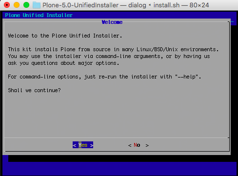
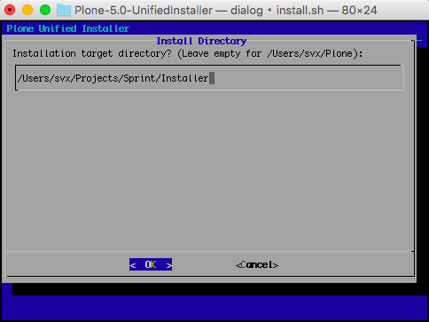
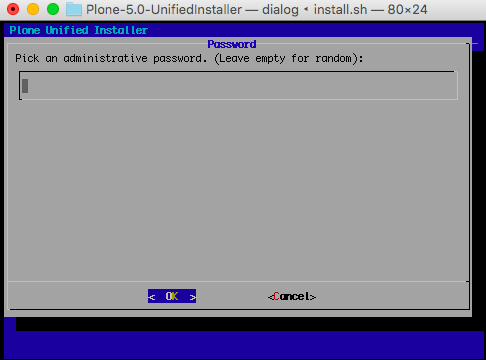
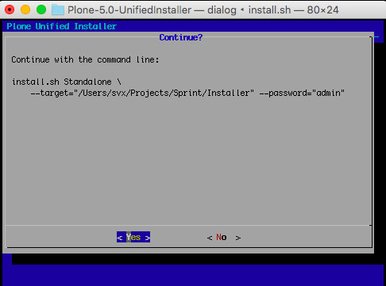
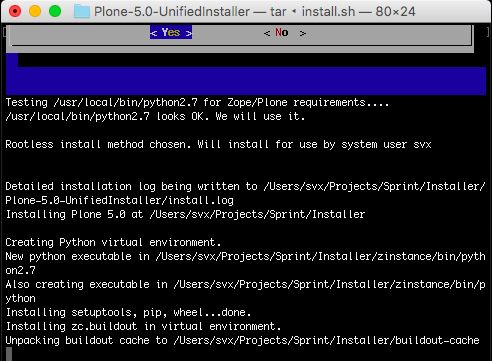
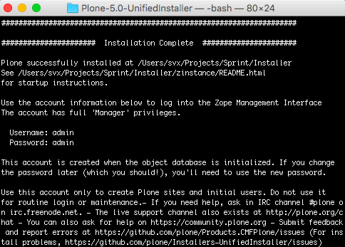

Installation¶
Abstract
This document covers the basics of installing Plone on popular operating systems. It will also point you to other documents for more complex or demanding installations.
Plone runs as an application on the Zope application server. That server is installed automatically by the install process.
Warning
We strongly advise against installing Plone via OS packages.
There is no .rpm, .deb, or BSD port that is supported by the Plone community.
Plone dependencies can and should be installed via package or port – but not Plone itself.
Note
For installing and running Plone on CentOS, please make sure that you have enough Memory and Swap.
If you use the Unified Installer on CentOS, make sure that you have at least 1024 MB of Memory.
Building lxml is resource consuming.
Download Plone¶
Plone is available for macOS, Windows, Linux and BSD operating systems.
Download the latest Plone release.
From here, you can also find links to the Vagrant install kit (if you wish to install Plone for evaluation or development on a Windows, macOS or any other machine that supports VirtualBox and Vagrant).
Installation on Linux, BSD and other Unix workalikes requires a source code installation, made easy by our Unified Installer. “Unified” refers to its ability to install on most Unix workalikes.
Plone Installation Requirements¶
See $HERE_LINK_TO_FILE for detailed requirements.
Todo
Fix above
- You need at least a dedicated or virtual private server (VPS) with 512 MB RAM available. Shared hosting is not supported unless the shared hosting company says Plone is good to go.
How To Install Plone¶
Plone can run on all popular desktop or server operating systems, including Linux, macOS, BSD and Microsoft Windows.
- You can install Plone on a server for production usage
- You can install Plone locally on your own computer for development and test drive
Plone Unified UNIX Installer¶
Note
Running Plone in production will normally also entail other software for optimal security and performance, like a front-end webserver, caching, and firewall.
See /manage/deploying/production/index>, and you may also be interested in </external/ansible-playbook/docs/index>.
Todo
Fix above
This recipe is good for:
- Plone development and testing on Ubuntu / Debian
- Operating system installations where you have administrator (root) access. Note that root access is not strictly necessary as long as you have required software installed beforehand on the server, but this tutorial assumes you need to install the software yourself and you are the admin. If you don’t have the ability to install system libraries, you’ll need to get your sysadmin to do it for you. The libraries required are in common use.
The resulting installation is self-contained, does not touch system files, and is safe to play with (no root/sudoing is needed).
Todo
Add docs about requirements, like we have in the old docs
Note
If the sudo command is not recognized or does not work you don’t have administrator rights on your operating system.
Please contact your server vendor or consult the operating system support forum.
You will probably also want these optional system packages for handling of PDF and Office files:
Todo
Add here docs/links for “extra” like we have in the old docs
Note
libreadline-dev or readline-devel is only necessary if you wish to build your own python rather than use your system’s python 2.7.
Todo
[svx] I removed the note about git and development, this should be ina own section and not here
Download The Latest Plone Installer¶
Download from the plone.org download page to your server using wget command.
Curl also works.
Substitute the latest version number for 5.0 in the instructions below.
wget --no-check-certificate https://launchpad.net/plone/5.0/5.0.4/+download/Plone-5.0.4-UnifiedInstaller.tgz
Plone Installer In Standalone Mode¶
Extract the downloaded file
tar -xf Plone-5.0.4-UnifiedInstaller.tgz
Go the folder containing installer script
cd Plone-5.0.4-UnifiedInstaller
Note
This will run the installer without any extra options, like setting passwords,
setting the install path or anything else, for a full overview over all the possible options use ./install.sh --help.
Run script
./install.sh
Please follow the instructions on the screen
We choose here for the standalone mode
Accept the default installation target or change the path
Choose a password option
Control the settings to make sure everything is as you want it
Wait till the installer is done
 The default admin credentials will be printed to the console, and saved in the file adminPassword.txt in the resulting install. You can change this password after logging in to the Management Interface.
Note
The password is also written down in the buildout.cfg file, but this setting is not effective after Plone has been started for the first time. Changing this setting does not do any good.
Start Plone¶
If you’re developing, start Plone in foreground mode for a test run (you’ll see potential errors in the console):
cd ~/Plone/zinstance
bin/plonectl fg
When you start Plone in the foreground, it runs in debug mode, which is much slower than production mode since it reloads templates for every request.
For evaluation, instead use:
cd ~/Plone/zinstance
bin/plonectl start
Use
cd ~/Plone/zinstance
bin/plonectl stop
to stop the instance.
By default, Plone will listen to port 8080 on available network interfaces.
The port may be changed by editing buildout.cfg and re-running buildout.
You’ve Got Plone¶
Now take a look at your Plone site by visiting the following address in your webbrowser http://localhost:8080
The greeting page will let you create a new site. For this you need the login credentials printed to your terminal earlier, also available at ~/Plone/zinstance/adminPassword.txt.
If everything is OK, press CTRL-C in the terminal to stop Plone if you’re running in debug mode.
Use plonectl stop if you did not start in debug mode.
If you have problems, please see the help guidelines.
For automatic start-up when your server boots up, init scripts, etc. please see the file </manage/deploying/production/index>.
Microsoft Windows¶
Beginning with Plone 5.1.4, the Unified Installer will install Plone on Windows 10. Windows installation instructions vary from Linux/Unix instructions! See the Windows-specific installation instructions that are included with the installer.
For earlier versions of Plone 5, you have the Windows installer or the Vagrant kit
For the Plone 4.3 series, there is a binary installer.
VirtualBox/Vagrant¶
This is the recommended method if you want to try Plone for the first time.
Please use the installer from the download page https://plone.org/products/plone/releases.
Installing Plone On macOS¶
Installation via the Unified Installer or buildout is similar to Unix. However, you will need to install a command-line build environment.
To get a free build kit from Apple, do one of the following:
- Download gcc and command-line tools from https://developer.apple.com/. This will require an Apple developer id.
- Install Xcode from the App Store. After installation, visit the Xcode App’s preference panel to download the command-line tools.
After either of these steps, you immediately should be able to install Plone using the Unified Installer.
Proceed as with Linux.
LibXML2/LibXSLT Versions¶
Don’t worry about this if you’re using an installer.
Debug Mode¶
When you have Plone installed and want to start development you need do </develop/plone/getstarted/debug_mode>.